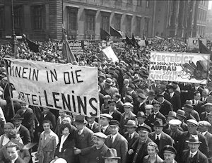

DEPRESSIONEN
Efter det glada 20-talet kom det mörka 30-talet. Det startade med den Amerikanska börskraschen i oktober 1929. Aktierna gick ner i rasande fart vilket skapade säljpanik hos Amerikanerna som ville rädda så mycket som möjligt av sina pengar. Många företag och banker gick i konkurs efter börskraschen, och arbetslösheten ökade enormt. Även de företag som överlevde kraschen avskedade många arbetare för att minska på kostnaderna.
Den ekonomiska krisen spred sig till Europa och inget land drabbades hårdare än Tyskland. Orsaken till detta var att Tyskland hade lånat ofantligt stora summor pengar utomlands så att landet kunde komma på fötter igen. Men nu när krisen inträffade krävde banker och länder tillbaka alla pengar Tyskland lånat.

Den tyska ekonomin rasade och var nu på botten. Företag, banker, städer och till och med kommuner gick i konkurs. Arbetslösheten växte till sex miljoner och många familjer gick hungriga. Värst drabbades barnen där tusentals dog av undernäring och sjukdomar. Tyska medborgare förlorade också sina besparingar när bankerna allt eftersom kollapsade. Många vände sig bort från de vanliga partierna och vände sig istället till mer extrema partier, såsom högerextrema nazistpartiet, i hopp om förändring.
Nästa Sida →